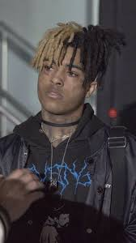
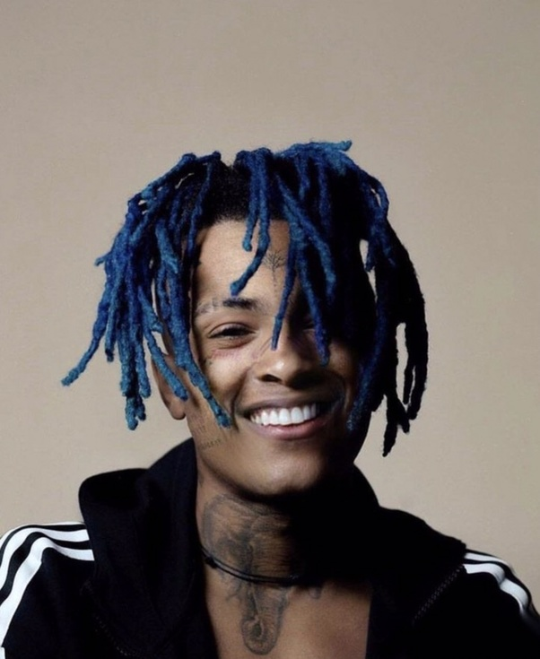

Jahseh Dwyane Onfroy
"XXXTENTACION"


Biography
Jahseh Dwayne Ricardo Onfroy (January 23, 1998 – June 18, 2018), known professionally as XXXTentacion[b] was an American rapper, singer, and songwriter. Despite being a controversial figure due to his widely publicized legal issues, XXXTentacion gained a cult following among his young fanbase during his short career through his depression and alienation thematic driven music. He was often credited by critics and fans for his musical versatility, with his music exploring emo, trap, lo-fi, indie rock, nu metal, hip hop and punk rock.
Born in Plantation, Florida, XXXTentacion spent most of his childhood in Lauderhill. He began writing music after being released from a juvenile detention center and soon started his music career on SoundCloud in 2013, employing styles and techniques that were unconventional in rap music, such as distortion and heavy guitar-backed instrumentals drawing inspiration from third-wave emo and grunge. In 2014, he formed the underground collective Members Only and alongside other members of the collective he soon became a popular figure in SoundCloud rap, a trap music scene that takes elements of lo-fi music and harsh 808s.[5]
XXXTentacion rose to mainstream attention with the single "Look at Me". His debut album 17 (2017) was certified triple platinum by the RIAA. His second album ? (2018) debuted at number one on the Billboard 200, and the album's lead single, "Sad!", reached number one on the Billboard Hot 100.[6] On June 18, 2018, XXXTentacion was fatally shot at the age of 20, in a robbery at a motorcycle dealership in Deerfield Beach, Florida. The attackers fled the scene in an SUV after stealing from him a Louis Vuitton bag containing $50,000; four suspects were arrested. No trial date has been set for the accused.[7]
XXXTentacion has RIAA-certified sales of 61 million units in the US and BPI-certified sales of over 7 million units in the UK, bringing his total to 68 million certified records sold within the two countries. Since his death, he has won an American Music Award, a BET Hip Hop Award, and received 11 Billboard Music Award nominations.[8] Two posthumous albums were released, Skins (2018) and Bad Vibes Forever (2019); the former became his second number-one album on the Billboard 200.
Quotes
“The saddest thing about betrayal is that it never comes from enemies, it comes from those you trust the most.”—
“I could never say I understand how you are all feeling, nor can I find the right words to say to you, but I do want you all to know, you are not alone.”
“Follow your dreams, and know that even though you have lost, you have guardian angels watching over you, day in and day out” —
“Please stop making me think you care if you don’t.” –